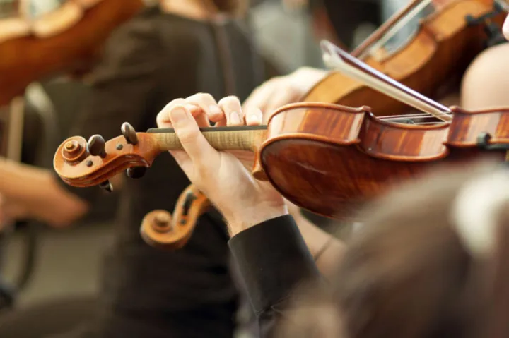

da sab 24 ott a sab 12 dic
Musica in Famiglia
Cinque appuntamenti al Teatro Filarmonico e nella Sala Filarmonica pensati per avvicinare bambini e adulti all’opera e alla danza. Programma
 Indicazioni
Indicazioni
- Costi e prenotazioni
- Costo non indicato · Prenotazione non indicata
- Programma
- Programma da verificare. Apri la fonte ufficiale per orari e possibili aggiornamenti.
- In caso di maltempo
- Nessuna indicazione specifica pubblicata.
- Note
- Acquisito automaticamente dalla fonte.
L’EVENTO
Descrizione completa
Cinque appuntamenti al Teatro Filarmonico e nella Sala Filarmonica pensati per avvicinare bambini e adulti all’opera e alla danza. Programma
Sabato 24 ottobre ore 15:30 Teatro Filarmonico Jeu de Cartes con lezione di danza Balletto con Regine di cuori e Jolly e , per tutti, lezione di danza con i ballerini della Fondazione Arena
Sabato 31 ottobre ore 15:30 Teatro Filarmonico Amelia al ballo Un’opera breve, brillante e piena di fantasia: Amelia al ballo racconta con ironia le avventure di una donna elegante e un po’ distratta, pronta a tutto pur di partecipare al primo ballo della stagione Sabato 7 novembre ore 15:30 Sala Filarmonica Pinocchio – il Balletto Il burattino di legno che diventa un bambino vero in un racconto senza parole, capace di emozionare e divertire grandi e bambini, dove ogni passo di danza dà vita alla magia della favola
Sabato 28 novembre ore 15:30 Sala Filarmonica Baby Puccini Turandot e il Principe gentile L’Opera Turandot di Puccini verrà raccontata attraverso gli occhi di tre bambini: La piccola principessa Turandot, il piccolo Calaf e la sorellina Liu. Spettacolo pensato per i più piccoli, dai 3 ai 7 anni Sabato 12 dicembre ore 15:30 Teatro Filarmonico Il Lago dei Cigni Un grande classico della danza in una versione pensata per i più piccoli. L’Orchestra areniana racconta dal vivo l’amore tra Odette e il principe Siegfried, separati da un incantesimo. Ma come in tutte le grandi storie d’amore, nulla potrà mai separare due giovani innamorati.
IL PROGRAMMA
Programma e orari
Appuntamenti raccolti dalle fonti elencate. Dove manca un orario, non è ancora disponibile in questa scheda.
Programma pubblicato
- 2026-10-24 — 2026-10-24 · 15:30:00
- 2026-10-31 — 2026-10-31 · 15:30:00
- 2026-11-07 — 2026-11-07 · 15:30:00
- 2026-11-28 — 2026-11-28 · 15:30:00
- 2026-12-12 — 2026-12-12 · 15:30:00
INFORMAZIONI UTILI
Prima di partire
- Controllare la fonte prima di partire.
ORGANIZZAZIONE